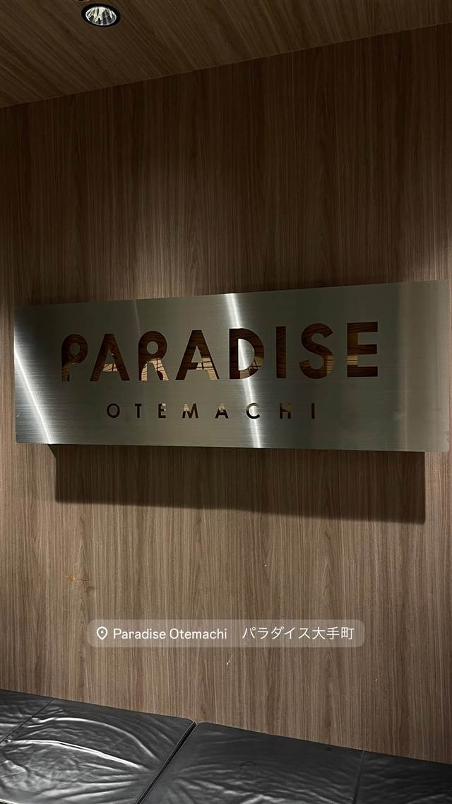

PARADISE 大手町店
日本最大級とされる25mのプール型水風呂を備えるサウナ施設
Paradise Otemachi パラダイス大手町
PARADISE大手町店は2026年2月1日、大手町のビル25・26階にグランドオープンしたサウナ・ジム・ワークスペースの複合施設（PARADISEの2号店）。前身は旧コナミスポーツクラブで、目玉は日本最大級とされるプール型の水風呂（25m）。飲食店ではなく、訪問時は店舗の看板を撮影したのみ。
TRIVIA
豆知識
- 26階の水風呂はプールほどの広さで日本最大級とされる
- フロア間の階段の踊り場は新進アーティストとのコラボ展示スペース「PARADISE GALLERY」になっている
REVIEWS
世間の評判
巨大プールと絶景での特別感
- 高層階からの眺望と巨大プールで味わえる非日常感を評価する声が多い
- 立地に対して料金が手頃でコストパフォーマンスが良いという声が多い
- 高級ホテルのスパに劣らない設備の充実ぶりを評価する声が多く見られる
口コミブログ複数
| 創業 | 2026年2月1日グランドオープン（PARADISEの2号店） |
|---|---|
| 系譜 | サウナ・ジム施設「PARADISE」の2号店。跡地は旧コナミスポーツクラブ |
| 掲載・評価 | 日本最大級とされるプール型の水風呂（25m）を備える |
| どこから | 都心 |
| 場所 | 大手町駅 東京都千代田区大手町2-1-1 大正大手町ビル25F |
| メモ | 大手町駅直結、ビル25・26階のサウナ・ジム・ワークスペース複合施設。26階はスイムウェアゾーン |
食べたもの：店舗の看板
NEARBY